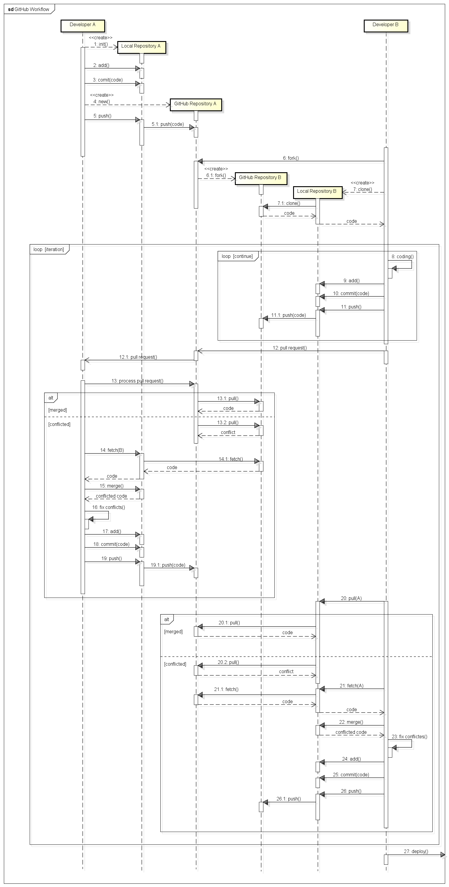

6. チームでまわすイテレーション¶
6.1. イテレーションサイクルの概要¶

6.3. ドキュメントの共有¶
ドキュメントは全てGitHubのWikiで共有します．
6.4. イテレーションサイクルのシナリオ¶
課題
図の修正：deployはDeveloper Aが行う
6.5. 概要¶
ここからはチームでの作業になります．作成するアプリは「ブログアプリ」です．次のURLに詳しい説明があります．
http://guides.rubyonrails.org/getting_started.html
作業を始めるにあたり，メンバーのなかから一人「Master Developer」を決めてください．
最初は，HTML(erbファイル）ごとに担当をきめ，Viewまわりを変更することから開始するとよいでしょう．
6.6. レポジトリの準備¶
6.6.1. Create a scaffold product¶
Master Developerは，次のコマンドで，Scaffoldを作成します．
$ rails new blog
$ cd blog
$ rm public/index.html
$ rails generate scaffold Post name:string title:string content:text
$ rake db:migrate
6.6.2. Create a local repo¶
Master Developerは，ローカルのgitレポジトリにcommitします．
$ git init
$ git add .
$ git commi -a -m 'Initial commit'
6.6.3. Push the repos¶
次に，GitHubにも新しいレポジトリ「blog」を作成します．作成できたら，pushしてください．
6.6.4. Fork the master to create a remote repos¶
Developer（他のメンバー）は，Master Developerが作成したblogレポジトリをGitHubから検索し，「Frok」します．